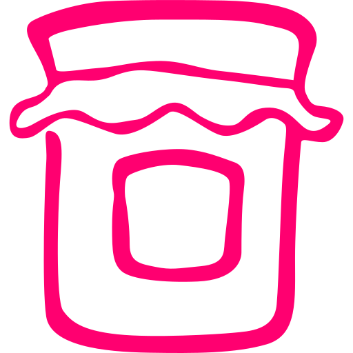
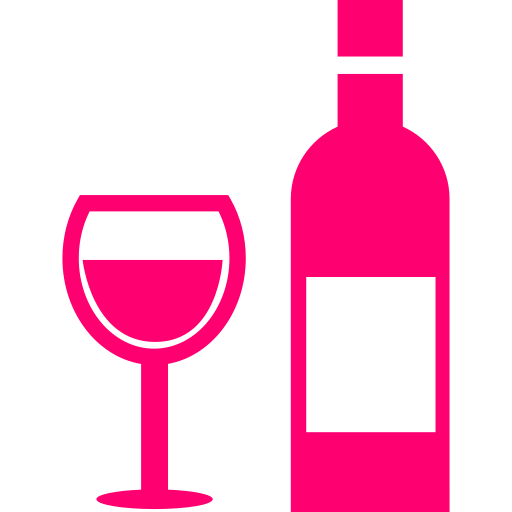

Home / Proizvodi
Šta mi to radimo?

Sveže voće
Gajimo četiri sorte maline:Himbo Top, Fertodi, Heritidž i Polku. i četiri sorte kupine:Čačansku bestrnu, Tri kralja, Loch Nes i Čester

Džemovi i slatko
Pravimo najukusnije džemove i slatka od organskih malina i kupina. U ambalaži po 370g i 700g.

Kupinovo vino i sok od maline
Zdravo i ukusno kupinovo vino sa x% alkohola. Slatkog ukusa. Sirup za uživanje u punom ukusu maline.